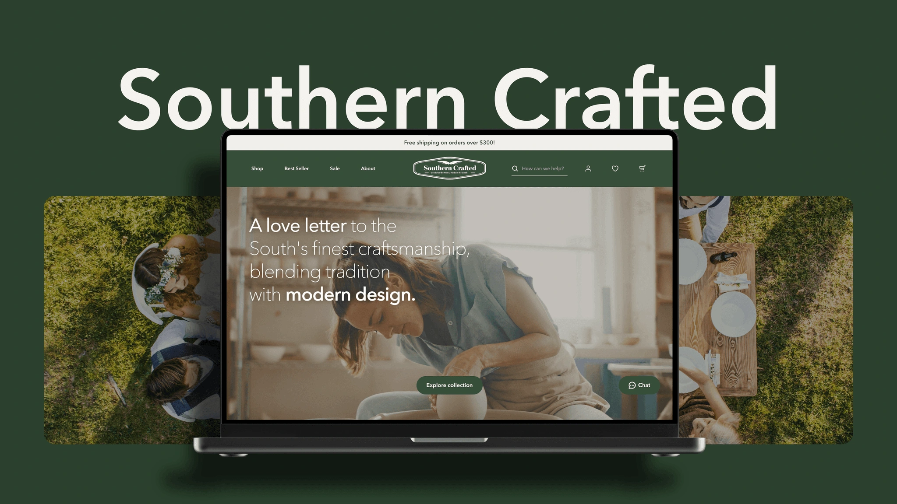
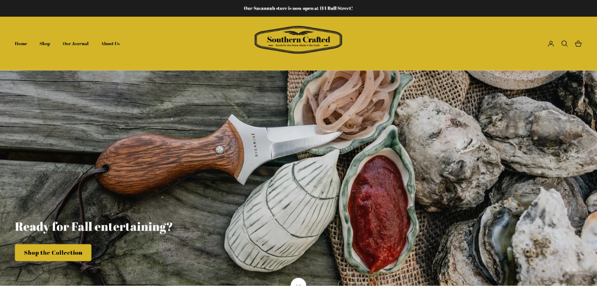
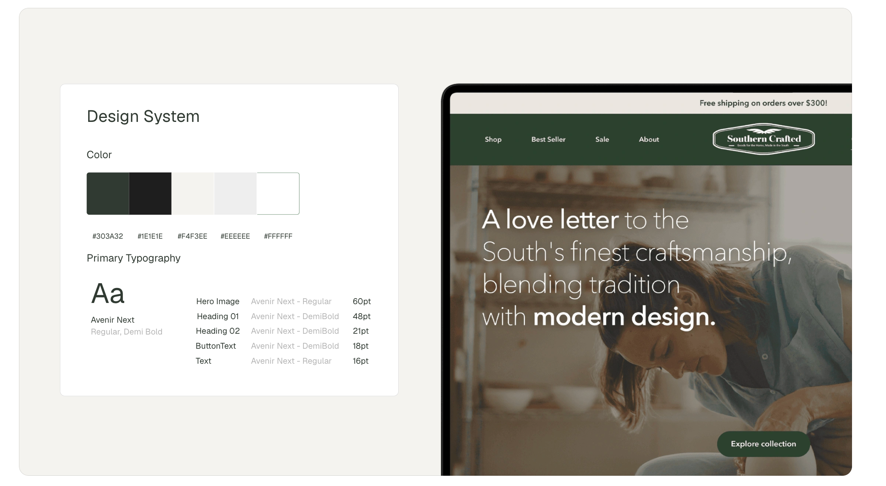
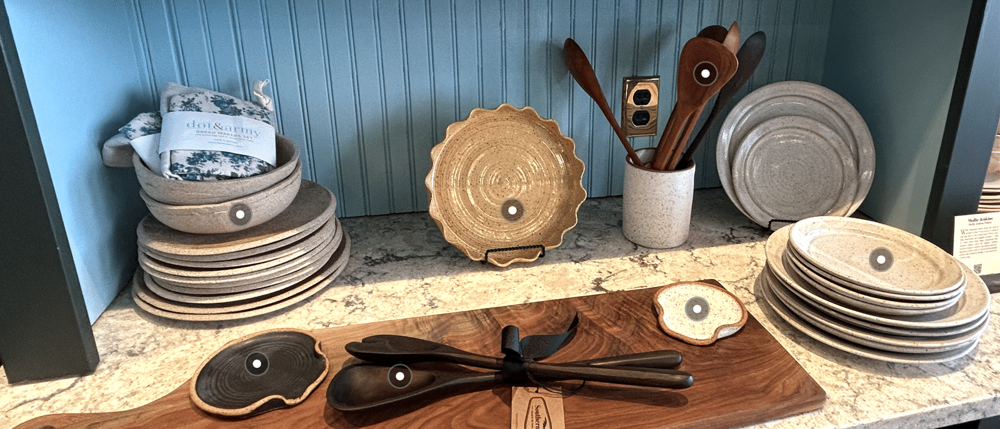

Southern Crafted · Student team project
Helping Southern craft find its way online
Southern Crafted is a Savannah shop selling handcrafted home goods from across the American South. In a 10-week student project, our team of four redesigned its website. I designed the homepage, from information architecture to high-fidelity UI, and helped build the design system and run usability testing.
- Problem
- The store felt warm and trustworthy. The original website hero section felt like a restaurant and was hard to shop.
- Solution
- A homepage that answers the questions shoppers actually ask before buying handmade goods.
- Result
- Task completion rose from 43% to 89%, and the redesign won 9 design awards.
Discovery
The store felt like home. The website didn’t.

In the store, Southern Crafted feels warm, personal, and unmistakably Southern. Online, that spirit disappeared. The homepage looked more like a restaurant than a home goods shop, products were scattered across unclear categories, and there was little to help shoppers judge a piece before buying.
We observed shoppers in the store, interviewed 16 in-store and online customers, and ran a card-sorting workshop. Before buying handmade goods online, shoppers kept asking the same questions:
“The design of the product is the most important thing to me, and next would be the price to see if it worth this price.”
“Some website also indicate whether the product is in stock, so I can get a rough idea of the waiting and shipping time.”
Home Page Redesign
A first impression that feels like the store

A warm hero image and a clear brand promise ("A love letter to the South’s finest craftsmanship") tell visitors within a second that they’re in a home goods store.

A new visual system brings the store’s low-country warmth online: Avenir Next for clean, modern type, and a palette of deep green and soft cream drawn from the shop itself.
Seeing products in real life

Product cards show stock status, price, and color options at a glance. A "Product In Real Life" section shows items styled on a real shelf: tap a marker to see what each piece is.
Results
From hard to shop to easy to love
We tested the original and redesigned websites with 32 participants.
| Measure | Original | Redesign |
|---|---|---|
| Task completion | 43% | 89% |
| SUS score | 32 | 85 |
| “How intuitive is the design?” | 1.2 / 4 | 4 / 4 |
9 design awards: 2 Gold, 3 Silver, and 3 Bronze at the 2025 Indigo Design Awards, plus ENTELECHY 2025 Best Web UI.
Reflection
Warmth and clarity have to work together.
Storytelling makes handmade goods feel special, but structure and details are what get people to buy.
Let shoppers settle the debate.
Card sorting answered navigation questions our team could have argued about for days.
Full research and process available on request.